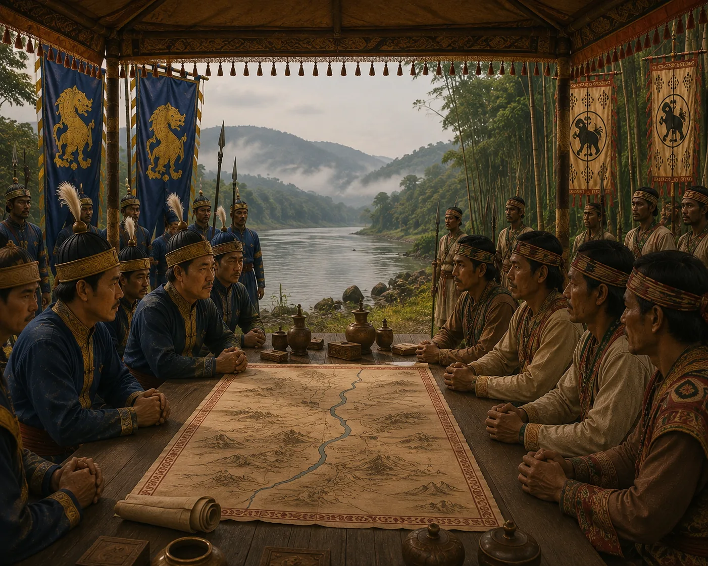

Diplomatic Negotiations with the Kachari King
c. 1275 · The coming of Sukaphaa

Suteuphaa sends envoys to avoid destructive protracted war, initiating bilateral talks with the Kachari monarch.
Sources have not yet been catalogued for this record.
People: Suteuphaa
Open this scene in the interactive archive · Follow this event on MAP